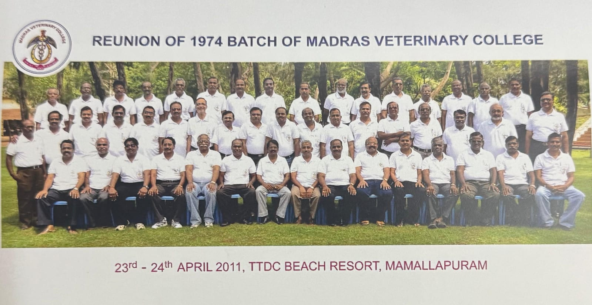
Thirty-Seven Years of Friendship: MVC 1974 Batch Mamallapuram Reunion
The Madras Veterinary College 1974 Batch reunited at Mamallapuram to commemorate thirty-seven years of friendship, shared learning and professional service.
The reunion photograph includes batchmates who served in TTPA, government departments and other organisations. The portraits below identify the TTPA members featured in the group photograph.
TTPA Members in This Reunion Photograph

Dr. B. Ramesh Kumar
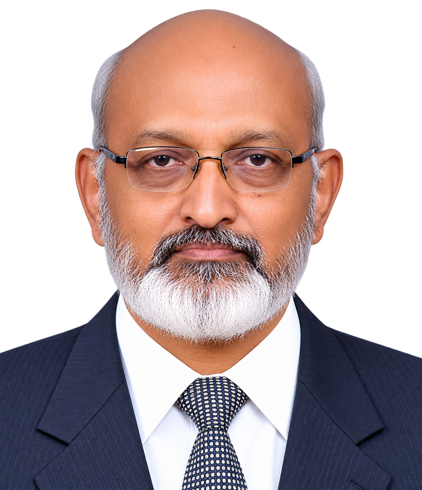
Dr. S. N. Sivaselvam

Dr. R. Prabakaran
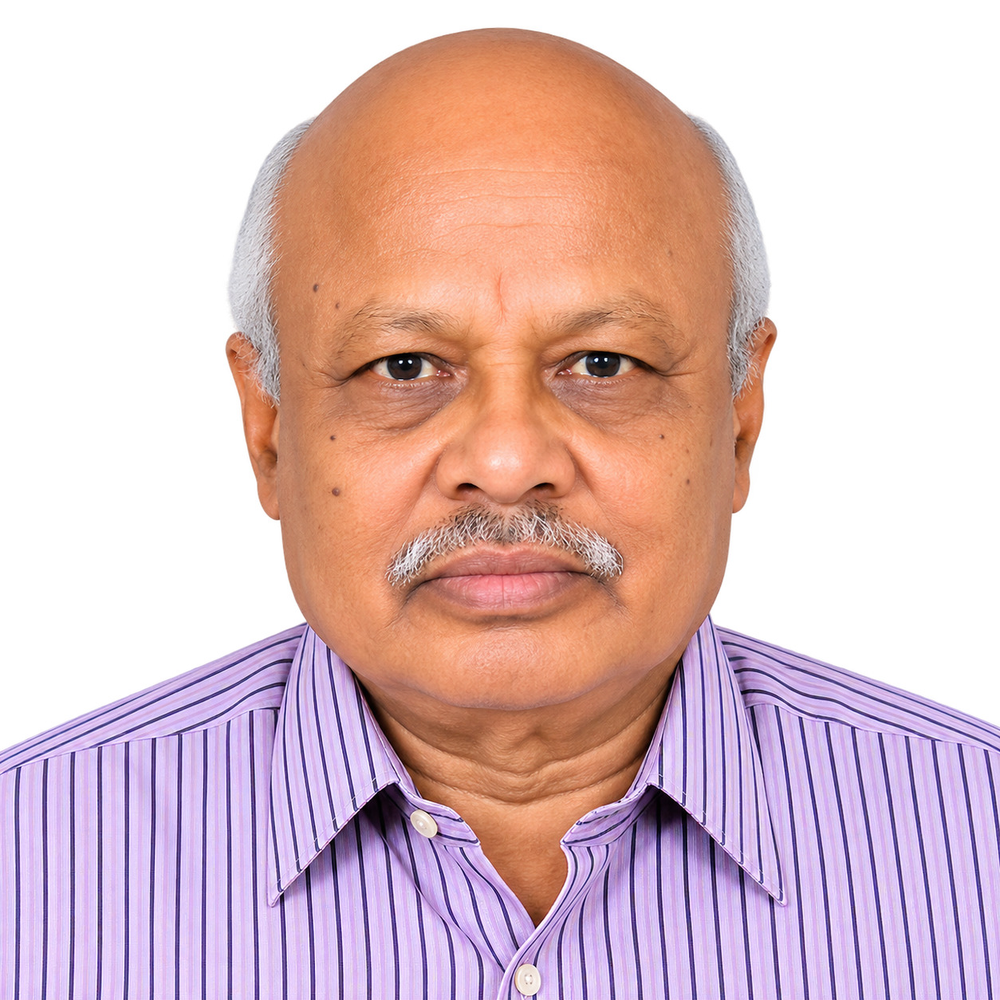
Dr. R. Ravi

Dr. C. Balachandran
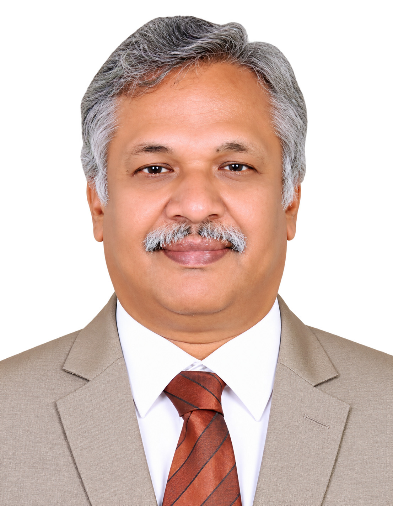
Dr. M. Murugan
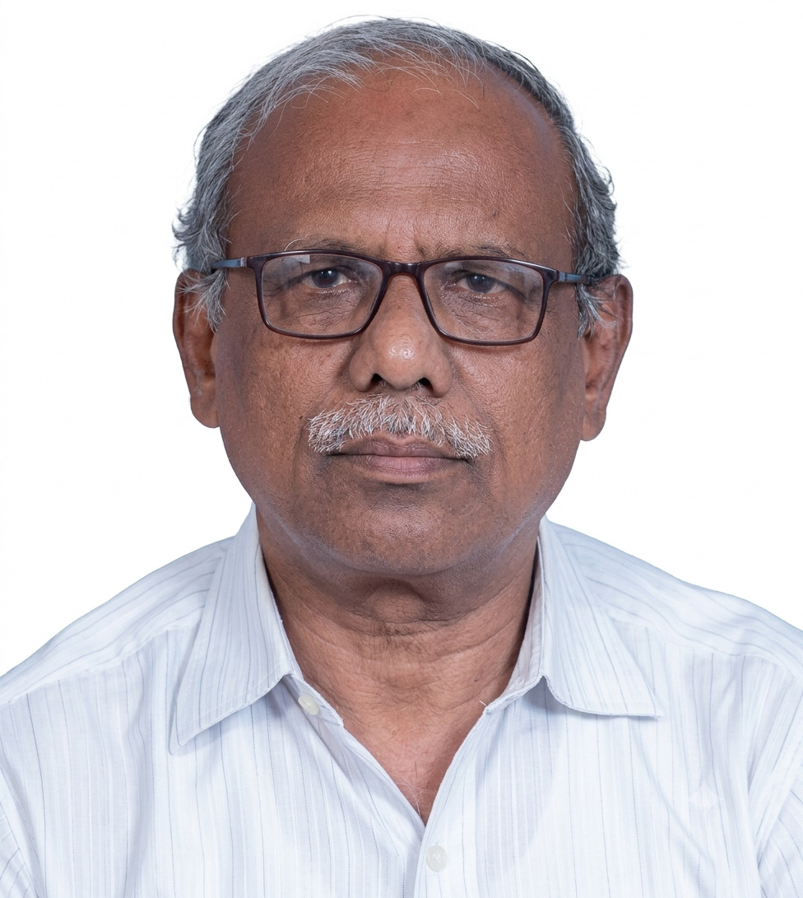
Dr. B. Mohan
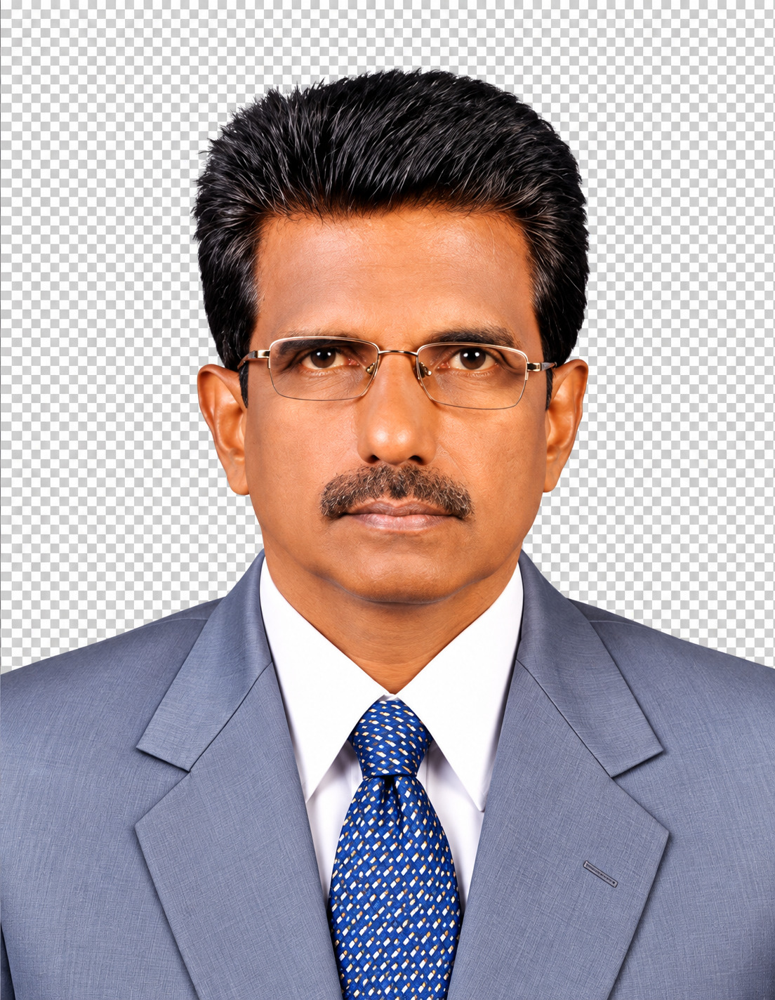
Dr. C. Veerapandian
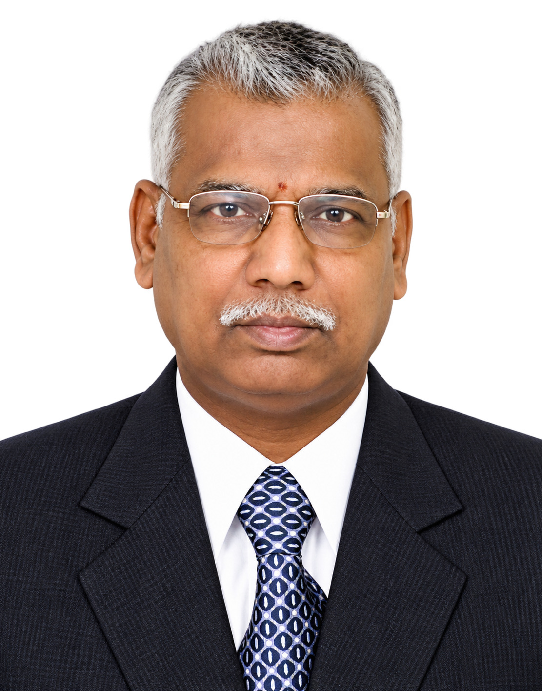
Dr. S. R. Srinivasan
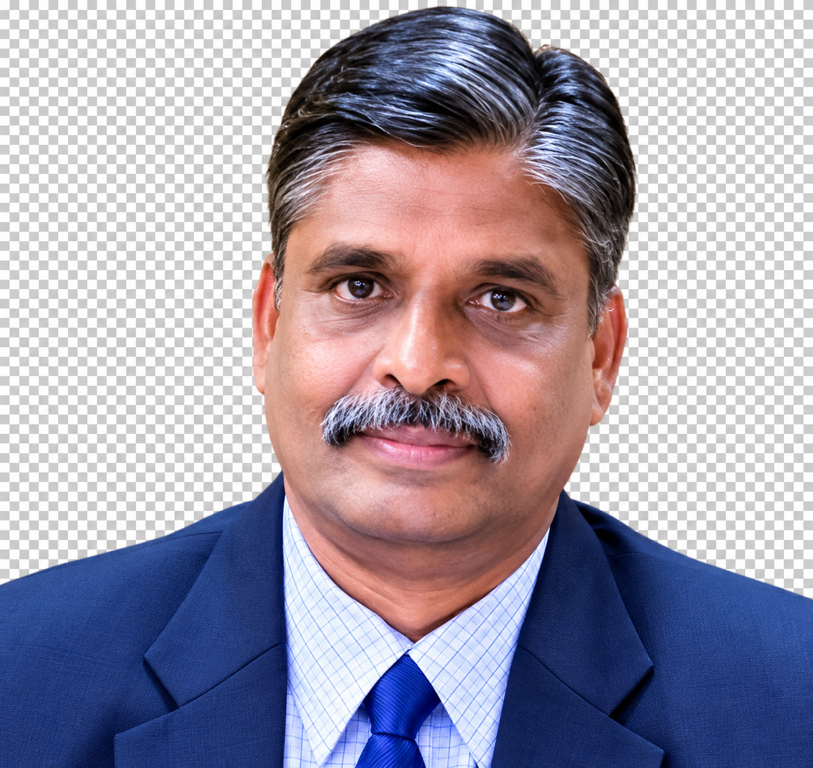
Dr. S. A. Asokan

Dr. N. Punniamurthy
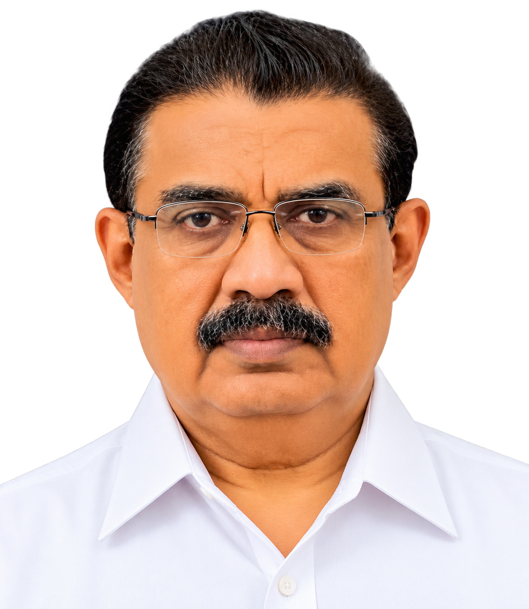
Dr. K. A. Doraisamy
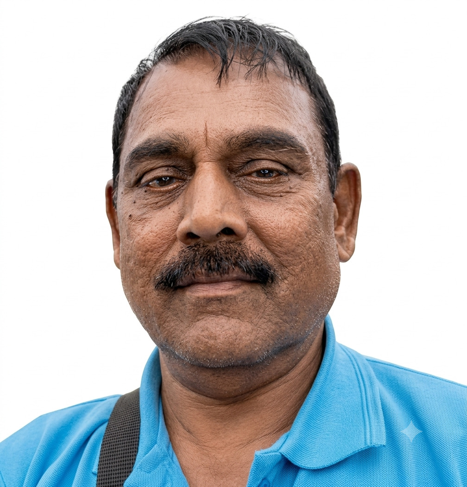
Dr. C. Chandrahasan
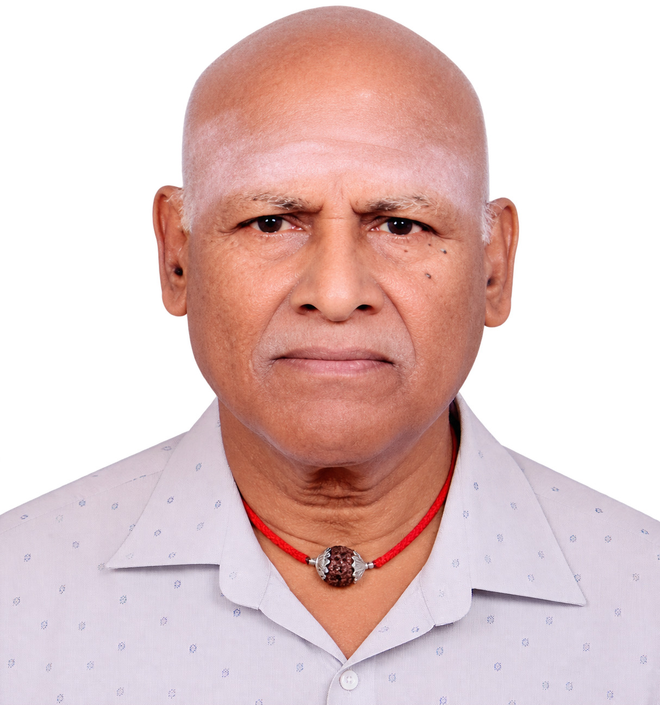
Dr. M. Babu
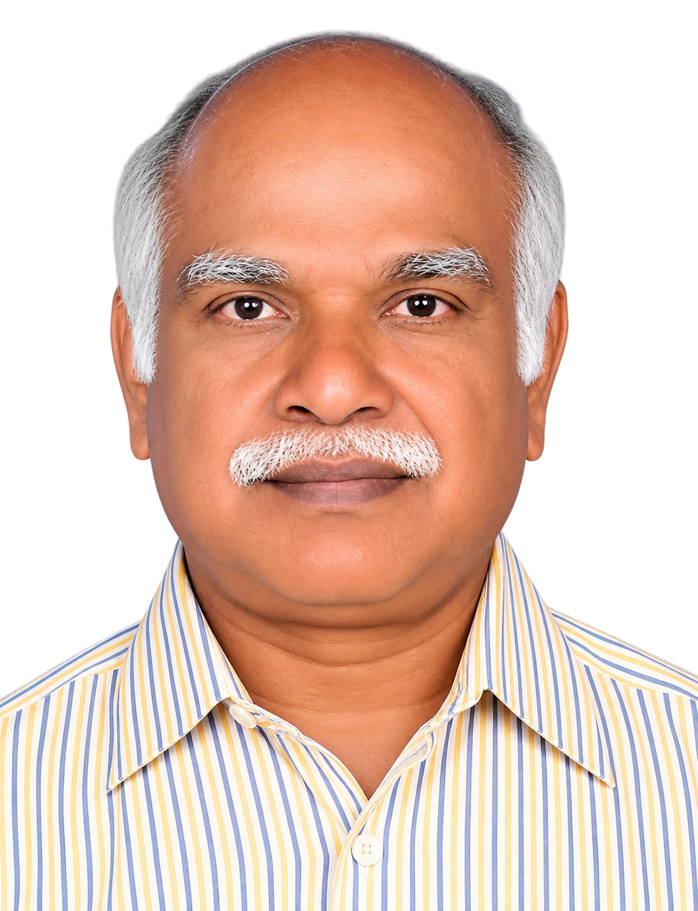
Dr. K. Viswanathan

Dr. A. Subramanian

Dr. Dhanan Jaya Rao